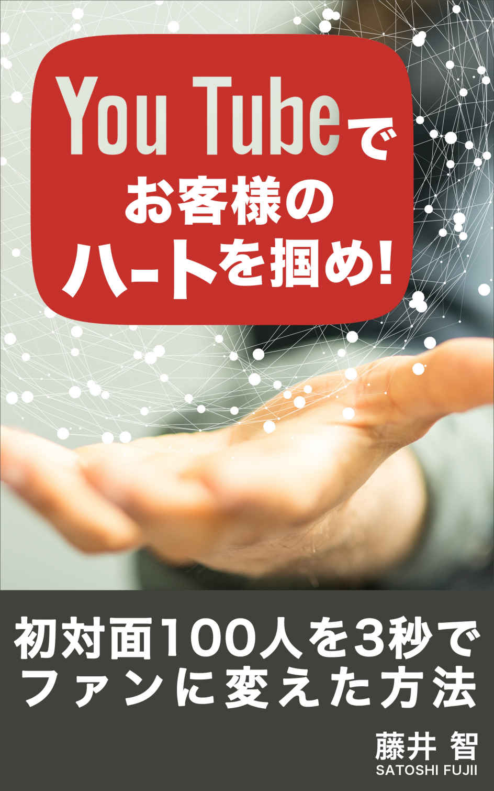

| YouTubeでお客様のハートを掴め！: 初対面100人を3秒でファンに変えた方法 | |
| 藤井 智 | |
| (2016) | |

初対面の人を３秒でファンに変える
本書を手に取ってくれて感謝します。
私はYouTubeを年からビジネスで活用するようになり、
自分自身のビジネスが非常に円滑に進むようになりました。
YouTubeをビジネスで活用するといっても、
巷にあるようなYouTubeの広告収入で稼ぐ。
というような手法ではなく、
コミュニケーションの一貫として活用しています。
私はこの方法を２０１５年よりビジネスで活かす事によって、
・Ｆｐコンサルティングから保険契約を任せて
頂いたお客様は９名(現在コンサル進行中4名)
・稼げる主婦を作り出すため１１名の
コンサルティング契約を総額６５万で獲得
・コミュニティ運営ビジネスで生徒２９人獲得し、
総額約６５０万の売上を達成
このノウハウを実践して約１年半。
YouTubeをコミュニケーションに活用する事で、
多くの人を３秒でファンに変えて、その後信頼関係を
構築する事によって、このような実績を作り上げました。
特別難しい事をしているワケではありません。
スマホが一台あれば即実践可能です。
YouTubeでは一般的に個対複数に発信していく
活用法が一般的ですが、本書では個対個の概念でYouTube活用
を推進しています。
ご存知の通り、YouTube動画の送受信もスマホの爆発的な
普及によって、ネット上で繋がっている人ならば、
いつでもどこでもカンタンに配信が出来る時代となりました。
YouTubeは動画を通じて、顔を出しでメッセージ出来るので、
文字だけでは伝わらない人の表情や雰囲気、声のトーンまでも
伝えてくれる面白いコミュニケーションツールです。
さらにどれだけ使っても、全部無料だというから驚きです。
現在、ユーチューバーというエンターテインメント性
溢れるの職業が新たに誕生しているのも納得できます。
しかし、このノウハウは再生回数も関係ありません。
面白い動画や飽きさせない動画にする必要もありません。
あなたは自身が不特定多数の方に向けた
ユーチューバーになる必要は全くないのです。
これは、あなたがこれから人間関係を育んでいきたい人、
個人にメッセージをする事でビジネスや人間関係を良質に
していくものです。
【自分の伝えたいメッセージをあの人に動画で届ける】
今現在、あなたがスマホをお持ちならば、
Facebookであれ、LINEであれ、Twitterであれ、
ショートメールであれ、電話番号など、
何かのデジタルな繋がり持っている人がほとんどです。
あなたがあなたの撮ったYouTube動画のURLを
お伝えするだけで、繋がりある人ならば誰にでも動画を
届ける事が可能な時代なのです。
本書を実践して頂く事で、以下の５点の事が実現出来ます。
・３秒であなたという人間のファンにさせる事が出来る
・初対面の相手にサプライズと好感を与える事が出来る
・次回のビジネスアポイントが容易となる
・ご自身のビジネス展開を優位に進めるキッカケ作りとなる
・初対面の相手と旧知の仲のような関係性を一瞬で構築できる
その結果、あなたのビジネスも大きく好転していくのです。
本書では私なりのYouTubeを使ったファン作りの
具体的なメソッドと、どのような動画を撮ると初対面の人を
たった３秒でファンに変える事が出来るのか？
コミュニケーションの具体的な事例を交えてお伝えします。
特に以下の人に注目して頂きたい内容です。
・営業マン、セールスマン
・カウンセラー、セラピスト
・ヒーラー等のスピリチュアル起業家
・コーチ、コンサルタント
・スポーツトレーナー、インストラクター
・ソーシャルワーカー・治療家
・士業や各種アドバイザー
個人のお客様を対象に対面でビジネスをされている
全ての人や起業家・経営者に共通する事です。
誰にでもカンタンに実践・応用可能な内容となっています。
明日から即実践出来て、カンタンに効果の出る内容となっています。
まえがき
第一章 本格的な動画時代の幕開け
第二章 初対面でお礼をもらって嫌がる人はいない
第三章 なぜ今YouTube動画なのか？
第四章 効果的な撮影のポイント
第五章 なぜ今お礼YouTube動画が効果的か？
あとがき
近年、すっかりお馴染みになった光景のように思われますが、
電車に乗っても、バスに乗っても、カフェやレストランでも、
待ち合わせの時間でも、多くの人はスマホばかり見ています。
あなたにもそのような光景は容易に思い出せる
のではないでしょうか。
【スマホの日本の普及率は７０％
】
市場調査会社のスマートプランニングによると、
日本の普及率も２０１６年で７０％
を超える予測が立っており、
２０代～４０代まではなんと８０％
の男女が保有している
というデータが出ています。
また、世界に目を向けると世界人口のスマホ普及率は
２０１６年には４９％
となると予測されており、
なんと全世界で２人に１人が気軽に手の平の中から
インターネット上にアクセス出来る事になると言われています。
スマホには疎いイメージのある５０代・６０代の
女性普及率も５０％
を超えているというから驚きです。
このように多くの人が、いつでも、どこでも
インターネットへアクセス出来るようになった結果、
スマホを活用して情報の収集や検索はもちろん、
SNSを使って、友人知人の近況をチェックしています。
【幼児からシニアまでスマホ生活】
私の母は現在６０歳で病院に勤務する介護福祉士
なのですが、同僚同士でLINEグループを作って
病院内のシフトや時事情報プライベートに関する事まで
交換しているようです。
時々、私に憶えたてのLINEスタンプを多用してきたり、
意味も無いのにハートのスタンプを使ってきて、
時折、うっとうしくて困るんですが、機械オンチの
６０歳の母親までスマホを活用しています。
先日驚いたのが、小さいお子さんのいる
ご家庭にＦｐ相談でお邪魔すると、
（藤井の職業はファイナンシャルプランナーです）
お子さんがお母さんのiPadを母親の所まで持ってきて、
「YouTubeを見せて〜」
と仕切りにおねだりするのです。
もちろんお母さんも息子が大好きな動画を知っているので、
僕とお話する間は静かになるために息子さんにYouTubeを
見せて時間を作っています。
また、別の家庭では大好きな妖怪ウォッチのダンス動画を
せがまれたママが、仕方なくその動画を子どもに見せ始めました。
そこで驚愕だったのが、なんと３歳のお子さんが動画を見ながら
歌って踊り始めたのです。
それも踊りを良く見ていると、動画とは左右反対の
振付けで子どもが楽しそうに踊り出したのです。
お母さんの話によると、既に何百回も見ている
お気に入りの動画らしく、ジバニャン（妖怪ウォッチのキャラ）
の踊る向き通りに子どもの身体を動かします。
鏡合わせをした時の状態をイメージして頂くと、
分かり易いかと思いますが、振付けを動く方向で
憶えてしまうと、実際、ダンスとは左右対称の振付けで
憶える事になってしまいます。
ある意味、子どもは素直なのでiPadに写るダンス動画
の動きをそのまま憶えてしまうんですね。
YouTube動画を通じて左右対称で振りを憶えている認識は、
母子ともになかったですが、ダンス経験者の僕からは、
YouTubeのみでダンスを憶える新世代の誕生という衝撃と、
左右対称でフリを憶えているお子さんにダブルパンチで
驚いた憶えがあります。
この時、凄い時代がやってきたと心底思わされました。
ちびっ子のスマホやタブレットの活用については
賛否両論ありますので言及は避けますが、
いずれにしても幼児からシニア層までスマホやタブレット
生活が確実に日常化しています。
本書の首題でもあるYouTube動画でファンを作るには、
動画のURLを特定の人に教える事さえ出来れば、誰にでも動画で
メッセージする事が可能です。
動画は文字情報に比べて、多くの情報をお届けできます。
伝えたい内容はもちろんですが、顔出しをする事で、
その人の話し方やファッション、表情、全体の雰囲気、クセ、
その人独特の間や口癖、人間味までも性格に伝わります。
老若男女ここまで国民の日常生活に入り込んでいるスマホです。
スマホがもたらすインターネット環境の拡大を利用して、
インターネット（も）使った動画ビジネスが出来ないか？
より便利で、より喜んでもらえる動画サービスは提供できないか？
まさに現代のビジネスマンの命題だと言えるのではないでしょうか？
では、どのように動画を活用していくべきなのか？
次章ではその事について触れて行きたいと思います。
本書はYouTubeを使って初対面の人を一瞬で
ファンにさせる方法についてお伝えしています。
どのようにやっていくか？を説明する前に、
なぜYouTubeなのか？
という経緯と私の体験したエピソードに
ついてお話させて下さい。
「藤井さん！そんなイイから、YouTubeでお客様を
３秒でファンにさせるノウハウ早く教えてよ！」
という意見もあるかもしれませんね。
ノウハウの概要について早く知りたいという方は、
下記URLをご登録下さい。
藤井がYouTubeで、お客様をあなたのファンにさせるポイント
を解説していますので、良かったら登録してみて下さい。
http://mail.os7.biz/m/FuDS
それでは、「なぜYouTubeなのか？」
というお話に戻りますね。
【シビアな保険営業マンの世界】
私は現在、広島に住んでおり、中国地方で個人のお客様を
中心にファイナンシャルプランナーとして活動をしています。
私がこの世界に入ったキッカケは25歳から外資系の
保険営業にて、フルコミッションの世界に身を投じて
スタートしました。
俗に言う完全歩合営業
というヤツですね。
保険業界では、会社から既存客を紹介されるような
一般的にいう、営業会社とは異なります。
まず最初に、＜
通称プール１００＞
といって、
自分自身の友人知人１００人をリストアップさせられます。
まずはそのリストをツテに営業をスタートさせる
という慣習があります。
お客様をシェアする。という意味では会社は何もしてくれません。
私は当時２５歳。社会人経験３年足らずでした。
元々知っている人が少なかったので、スタートして３ヶ月。
少ない社会経験で得た知り合いは全て回りつくしてしましました。
しかし、毎月毎月新規契約を獲得していかないと、
スタートアップで支援頂ける初期補給金という
定額の給料がストップされるのです。
初期補給金がストップされてしまうと、ご契約頂いたお客様から
頂く純粋な保険料報酬が、自分の収入になるのです。
しかし、営業をスタートして数ヶ月で初期補給金がなくなると、
当然、契約件数も少ないので生活出来るだけの報酬額
ではありません。
保険業界に入った人が長続きしないという由縁ですね。
それはまさに当時の僕にとって死の宣告となるワケです。
だから多くの人と知り合って、見込み客を探して、
保険の見直しをしていく。日々この繰り返し、繰り返し。
非常に泥臭い営業でした。
営業経験のある方は分かると思いますが、
現在、見込み客をどれだけ抱えているのか？
現在商談中のお客様が何組あるか？何社あるか？
そのボリュームで向こう１ヶ月から
半年の成績が大きく決まります。
【やったらやった分だけの営業報酬】
そんな世界ですから、思ったように契約が
挙がらない月は、月収１０万円を切る月も経験しました。
だからこそ、当時の私の命題は、保険に入ってくれる人を
作るというよりも、どれだけ多くの人と知り合って、繋がって、
関係性を継続して保てるのか？
そんな人を如何に増やせるのか？そればかり考えてました。
事実、仕事のほとんどは、いかに知り合いを増やせるのか？
という部分にだけにフォーカスをしていました。
また、営業成績を挙げるために営業本や成功法則
についての本を片っ端から読みまくりました。
お金の許す限り多くのセミナーや研修にも出掛けて
営業の勉強をしながら、そこに集う人と仲良くなっていく。
そんな一石二鳥な活動をひたすらしていました。
【ハガキの達人との出会い】
ある日、セミナーで偶然ハガキの達人と出会います。
達人にこう言われました。
「藤井さんは保険屋さんならば"ハガキ"をやったほうがいい。」
達人の教えは２点のみでとてもシンプルでした。
・出会った人にお礼ハガキを書く
・出会ってさらに仲良くなった人に定期的にハガキを送る
出会いに感謝する事を伝えて藤井の印象を残すお礼ハガキ。
季節の節目や四季の絵柄を入れて、自分が保険屋さんである事を
忘れられないために送る売り込まない定期ハガキ。
最初、この話を聞いた時、正直、
めんどくせーなっと思っていました。
しかし、達人の教え子の保険屋さんが、
「毎年ハガキを２０００枚以上送っている
保険屋さんの年収２０００万円だよ！」
「年間送るハガキの枚数と年収は相関関係にあるかもよ！」
そう告げられると、僕の態度は一変して、
「先生！お礼ハガキと定期ハガキやります！」
そんな不純な理由でスタートしました。
【ハガキを２０００枚出すと年収が２０００万になる
】
・初対面の人に好意的で良い印象を与える
・保険の事に関して疑問が生じた時には１番に思い出してもらう
ハガキの達人よりそんな営業補助体制作りが必要だとアドバイスを
もらった僕は、その日から素直にハガキを実践する事にしました。
名刺交換をしてきちんと会話させて頂いた方には、
その日中（遅くとも翌日）にお礼ハガキを実践し始めました。
お礼の挨拶とは別に、会話の中で生まれた【キーワード】を
交えた文章を一筆添えて、ハガキをお送りしてみました。
実践してすぐさま、思わぬ反応を受ける事になりました。
ハガキを受け取った方からわざわざお礼のお電話を頂いたり、
お礼のショートメールを頂けたり、Facebookから
お礼のメッセージと同時に友達申請をもらったり、
今までに初対面の人から経験した事のない好感触を感じました。
また初回面談が終った後、お近づきになりたいと思っている方に、
コチラからアポイント取得のお電話すると開口一番、
「はがき見たよ！」
「達筆でステキだね～！
」
「ありがとうね！
というような、思わぬ反応を頂き、
すんなりアポが取れるようになりました。
すげーな！ハガキ！
やべーな！ハガキ！
素直にそう思いました。
これは凄くいいんじゃないか？と思ったので、
その後もひたすら実践は続きました。
多い時には毎月２００枚～２５０枚
ハガキを書いていました。
やればやるほど、アポも取れる、そして、営業が
ラクになる。結果、成績もみるみると向上していきました。
生活出来るだけの安定収入もあっと言う間に
構築していく事ができました。
【YouTube動画で偶然の気付き】
そこから月日は流れて２０１５年。
毎月ハガキを書きながらも元々、独立志向が強かった私は
外資系営業から独立してファイナンシャルプランナーとして
活動を始めました。
もちろん相変わらずハガキも書いていました。
相変わらず勉強は続けていて、セミナーにも多く参加して
いたのですが、あるセミナー終了後、講師から受講者全員に
向けたYouTube動画が送られてきました。
私の事を気に入ってもらったのか？皆宛に送った動画の一部に、
「藤井さん！」
っと名前を呼んで頂く機会がありました。
内容は受講中の態度が積極的だった事に対する
お褒めとねぎらいの言葉をYouTube動画を通じて頂きました。
私は動画で褒めてくれた、このセミナーの講師に
一瞬で好感を持ちました。と同時に、またこの人のセミナーに
参加したい！もっとお近づきになりたい！と強く思いました。
そこでふと気づいたんです。
これっていつも自分が実践している
ハガキと同じ効果なのでは？
そんな直感めいたものを感じました。
もしかして・・・・と思い、試しにお礼ハガキの変わりに
YouTube動画を送ってみてはどうか？
思いついたら吉日で、ビジネスで初めてお会いしたお客様へ
お礼のYouTube動画を送ってみました。
内容は１分程度の動画だったと思います。
・今日わざわざ時間を取ってお逢いして頂けた事への感謝の一言
・その人が話してくれたキーワードや価値観に対する僕なりの感想
・次回お逢いする事への期待
この３点をお会いした当日、自分で撮影して、
YouTubeへアップロードして、その動画のURLをお客様の
LINEに送ってみました。
送ってみると、その夜すぐ電話が掛かってきて、
「驚いたよ！初めて自分宛の動画をもらったよ。」
「ありがとうね。次回も頼むよ！」
そんな一言を頂きました。
案の定、非常に好評価を頂きました。
そのお客様は最終的に私の仕事ぶりを気に入って頂き、
正式にお客様となりました。また、嬉しい事に大事な妹夫婦や
ご両親までもご紹介して頂く事が出来ました。
その時に感じたのは、ハガキであれYouTube動画であれ、
【初対面でお礼をもらって嫌がる人はいない】
当たり前と言えばすごく当たり前だけど、
ハガキであれ動画であれ、人は感謝の気持ちを
形にされると喜んでくれる。
そんな事改めて気づかされた瞬間でした。
その後も初対面で出逢った方に対して、同じように
YouTubeのお礼動画を継続して送ってみると２度目に
お逢いする前から、僕の事を好印象に思ってくれて、
契約～紹介という理想的なパターンを何度も経験しました。
ハガキとは別の武器を手に入れた瞬間でした。
前章では動画で初対面の人へお礼のYouTube動画
を送った所、非常に喜ばれて、それ以降の面談でも
良い関係性で仕事が上手く回り出したという
お話をしていきました。
ではなぜ私にとってYouTube動画が効果的だったのでしょうか？
私にはポイントが３つ
あると考えています。
順番に解説していきますね。
第１ポイント 【サプライズ】
もしあなたがさっきまで話をしていた人から、
ショートメールやLINEを通じて、お礼の動画が届けられたら
どんな気持ちになりますか？
間違いなくビックリすると思いませんか？
動画とはいえ、Face to Faceを通じて、
改めてお礼を言われると相手は嫌な気分はしないでしょう。
今日（もしくは昨日）直接お話をした相手に、
動画を通じて自分の近況や喋った事のキーワード、
出逢いの感想を述べられると、
話をキチンと聞いてくれていた感がハンパないんだと思います。
まさに動画サプライズと、話をキチンと聞いてくれた感激。
その両方に不意をつかれたような感覚なのでしょう。
YouTube動画を送ると、高確率でお礼のメッセージを頂きます。
メッセージの内容を見ると大抵、
・動画が送られてきた事に驚いた事
・私のためだけに動画を撮ってもらって感激だった事
このような感想を頂く事が殆どです。
初対面の方へ自分を強烈に印象付けておく事で、
次回お逢いする時も、先方から開口一番、先日はありがとうね！
驚いたよ！と会話もスムーズな流れで始まります。
結果的にそれ以降の商談も非常にやり易くなるわけです。
第２ポイント 【スピード感】
初めて逢ったその日中に動画が届くスピード感。
ハガキを実践していた時にでも同じ事がいえますが、
わざわざ、ハガキで一筆お礼とその時交わした会話のキーワードや
エピソードを入れるひと手間が喜ばれます。
「◯◯さんの◯◯の話が面白かったです。」
「次回は◯◯についてもっと聞かせて下さい！」
このようなひと手間が、良好な関係を築くためのツボでした。
単純にそれがYouTube動画に変わるだけ。
ハガキにしろ、YouTube動画にしろ、この"わざわざ"の
ひと手間に当日、遅くとも翌日にメッセージが届くという
スピード感が乗ってくると、より一層相手の心を掴みます。
これを読んでいる方には、もしかすると計算的で偽善者だと
言われるかもしれません。
しかし、お逢いして頂いけた事に対する
感謝の気持ちは真っ先に伝える事は悪い事でしょうか？
むしろ、私はその人の貴重な時間を
私のために提供してくれたワケなのだから、
そこに感謝を述べる事は、ビジネス云々の前に、
実は人として一番大事な事なのではないでしょうか？
そして、それ以上大事な仕事ってあるのでしょうか？
やはり出来る人は、このひと手間を掛けて人間関係を
より良いものにしていきます。
何も難しい事はしていません。
誰でも出来る事にひと手間を掛けているだけなのです。
あなたも思い出してみて下さい。
あなたの回りに、初めてお逢いした方から、
分かれてすぐさまお礼のメールやLINEが送られてきた
事はありませんか？
後日お礼状が会社や自宅届けられたり、翌日の朝、
前日のお礼電話をかけている人の姿を見た事があるはずです。
マメだな〜っと思いますよね。
特に年長者や実力者になると、
このような礼儀を重んじている節があります。
やってみると、若いのにしっかりしてるね！
なんて褒められる事まであります。
このちょっとしたひと手間が、自分の知らない所で
高評価となって可愛がって頂く事ができるのです。
まさにスピード感を持って感謝を述べる事は、
百害あって一利なし
ではなくて、
百利あって一害なし
というワケです。
第３のポイント 【コスト】
ハガキや手紙も実践をするとコストが掛かります。
便せんや封筒代、ハガキ代・切手代などです。
私は以前、一枚お礼ハガキを送ると、ハガキ代や切手代合わせて、
一人の人に対して約１００円のコストが掛かっていました。
１００円でより良い関係性が築けるならば
必要経費だと割り切っていました。
しかし、それが月に５０回１００回となると
コストも５０００円〜１万円となってなかなかバカに出来ません。
私の場合、初回出逢ってから逢う度に、ハガキを送っていた
事もあるのでピーク時にはお礼ハガキだけでも、
１００回×１００円＝１万円
月に１万円のコストが掛かっていました。
それがYouTube動画だと、
スマホやパソコンの内蔵カメラでカンタンに撮影した動画を
YouTubeに何本もアップロードしても掛かるコストはゼロです。
全て無料。送料も掛かりません。
FacebookメッセンジャーやLINE、もしくはショートメールに
YouTubeのURLを送るだけなので、当然コストはゼロですよね。
当時、フルコミッションの保険セールスだった私の報酬は、
山あり谷ありの安定しない報酬形態だったので、
必要経費とはいえども、年間コストはそこそこ重たかったのです。
このようにコスト面から見てもとっても経済的に優しいです。
スマホ時代だからこそ出来るワザですし、
動画を使ったこの方法は、新しい感謝の示し方の
一つなのではないかと思います。
騙されたと思って、あなたも是非やってみて下さい。
撮影技術どうのこうのは置いておいて、単純に相手に喜ばれますよ。
サプライズするのもされるのも好きな方には本当にオススメです。
では、どのようにすると効果的なのか？
次の章で解説していこうと思います。
この章では私が普段、お礼の動画を作成する時に
意識している点を以下の通りまとめます。
【ボリュームは３分以内】
スマホで見られる事が大半だと考えましょう。
WIFI環境下で御覧になっていない事を思いやると、
スマホではデータ制限もあるので、長すぎても嫌われます。
完結に３分程度にまとまれば上出来でしょう。
むしろ私が考えるのは短ければ短いほど良いという事です。
１分でも何も問題ありません。
ここはお逢いして下さった感謝の気持ちを伝える事が
目的ですから、１分でも十分に感謝の気持ちは伝わります。
大事なのは心を込めて感謝の気持ちを伝える事です。
【まずはご挨拶から】
「◯◯さん今日◯◯でお逢いした◯◯です。
先ほどはありがとうございました。」
「また、動画を御覧頂きましてありがとうございます。」
名前と同時にどこで逢ったかもお伝えするとより記憶が
鮮明にフラッシュバックするので良いです。
また、"先ほど
"とあえてつけるのも、相手に対して、
「あの後すぐ撮ったのか！」
と伝わるので、スピート感がより伝わって良いと思います。
【逢って頂けた事への感謝を口に出す】
「今日は貴重なお時間を頂きまして、ありがとうございました。」
きちんと言葉に出して逢ってくれた事に対する感謝を述べましょう。
特に営業を目的で面談された方は、丁寧な挨拶とお礼が
出来ているかどうか？ここが非常に大事な所です。
当たり前のようですが、当たり前の事をキチンと
出来る人は意外と少ないものです。
誰にでも出来る事カンタンな事を卒なく
こなす事で、正味、数秒の一言にはなりますが、
初対面の相手に好印象を残せるはずです。
【共通項を再確認する】
「出身地が一緒だった事驚きました。不思議なご縁を感じました」
「内にも◯◯さんと同じ◯歳の子どもがいるので、
◯◯さんの気苦労よく分かりました」
「青春時代は私も野球児だったので、なんか嬉しかったです」
前述のように、自分との【共通項】に触れるを事を
ラポールを築くと言います。
あなたにも経験があると思いますが、初対面の人と共通点
を見つけると、なぜだかよく分からないけど嬉しくなりませんか？
アレをすれば良いのです。
ラポールを築く事で、相手との距離感が一気に縮まり、
コミュニケーションが円滑になると言われています。
もし、あなたがお逢いした時に、相手との共通項を発見
出来ていれば、再度、印象を残すアピールポイントとして
使わない手はありません。
出来る営業マンやコミュニケーションの達人は、
ラポールの達人であると言われています。
あなたも今までの出逢いの中で、
初めてあったのに初めての気がしない。
あの人はなんかイイよね。
という営業マンに出逢った事ないですか？
ラポールを見いだした瞬間、昔から知っている友達みたいな
感覚におちいってしまう経験です。
あなたもそのようなラポールの達人に出逢った事があるはずです。
お礼YouTube動画では、無理にラポールについて触れる
必要はありませんが、お逢いした時の事を思い返して、
自然に出てきた会話の中で見つかった
共通点ならば再認識をするようにしましょう。
さらにあなたへの親しみが増すことになるでしょう。
以下にラポールをまとめておきます。
初面談する前の予習として頭に入れておくと、
実際の場で会話が弾む事でしょう。
・出身地
・出身校
・年齢
・家族の状況や家族の年齢
・趣味や特技
・スポーツ
・昨日見たテレビ番組あるある
・好きな食べ物やお酒
・過去の勤務地
・子どもの習い事
【会話に出て来た相手の価値観に触れる】
「今日のお話の中で◯◯と仰られておられましたね。」
「私も同じ子どもを持つ親として◯◯さんの
お考えは非常に考えさせられました。」
このノウハウの中で、ある意味ココが憎らしいテクニックと
言ってもいいかもしれません。
一言で言うと相手の価値観について触れる事です。
ある程度話し込んだ相手なら、
相手がどんな状況でどんな事を心配しているのか？
どんな悩みや問題を抱えているのか？
何がキッカケだったのか？
そして、そのために今何をしているのか？
なぜ上手くいっていないのか？
を深く語ってくれる事があります。
その中で出てきたエピソードや相手の考え方2対する
価値観にフォーカスするのです。
そして、その価値観を尊重してあげて下さい。
自分の意見を聞いてくれた。それだけで人は嬉しいものです。
どのように価値観を尊重してあげるのか？は次にご注目下さい。
【相手を尊重し、自分の考えも伝えていく】
「◯◯さんのお考えについて
私も同じ経験をしました。というのも・・・」
「私も過去に似たような◯◯体験をしまして・・・」
実は動画の秒数にするとあっという間ですが、
かなり大事だったりします。
慣れないと意外と難しい部分でもありますが、
ハートをガッチリ掴むための凄く大事なパートです。
お逢いした方のエピソードに対して、
自分の経験談から来る感想を述べると、
より関係性が深く太くなります。
但し、否定的な意見は相手を嫌な気持ちにさせる恐れが
ありますので控えましょう。
そもそもYouTubeお礼動画を送る目的は、
感謝と好印象を与えるためです。
自分とは違う価値観に違和感を感じる事
もあるかもしれません。
そこはグッと受け止めて、否定的にならず、
そういう考え方もあるのか？凄く勉強になりました。
と捉えて感謝を伝えてあげましょう。
サラッと自分の意見も述べる事で、相手にも自然な形で
自分の持っている価値観を共有する事になるので、
次回お逢いした時に、あなたを見る目がより【好意的】
に変わってくる事を体験する事でしょう。
相手の価値観を聞き出すのは、各自のヒアリング能力も
問われますが、信頼を築く意味でも非常に大事な部分です。
難しいと感じるならば最初から無理して
トライする必要はないので安心して下さい。
何度も繰り返しますが、ここで一番大事な目的は
お逢いしてくれた相手に感謝を伝え、
次回にお逢いする時までの好印象を残す事です。
最初の内は動画で感謝を伝える事だけでも喜ばれますので、
無理せずまずは感謝を述べる所から実践してみて下さい。
そもそも初対面の方へ感謝の意を表すツールは
どんなものがあるのでしょうか？
以下のように挙げてみました。
・お礼はがき
・お礼状（手紙）
・お礼電話（翌日に電話する）
・お礼メール（LINE）
・お礼ファックス
・お礼訪問
私自身が外資系保険マン時代意識してやっているのは、
即日のお礼ハガキと翌日のお礼電話でした。
【トップ営業マンが徹底している戦略】
以前同じ会社にいた全国区のトップ営業マンの同僚は・・・
社長さんと飲みに行った帰りに、分かれた後に、
すぐさまお礼メールをして、その帰りに郵便局によって、
ハガキを投函して、朝起きたら昨夜のお礼電話を掛けて、
出社したら会社からお礼のFAXをして、
その夕方ハガキが届くというように、徹底的に
自分というキャラクターを印象付けているツワモノもいました。
変わった奴だと思われながらも、きちんと憶えてもらって、
次のアポイントを必ず取り易くするという徹底ぶりでした。
【感謝を伝えるツールの相関図】
メール ＜
手書き文章 ＜
電話 ＜
対面
以前、営業の研修として、
コミュニケーションの方法として親密度を示す、
前述のような相関図を学びました。
デジタルな文章よりも
暖かみのある手書きの文章。
手書きの文章よりも
電話口から伝わる暖かい声のトーン。
耳から耳への電話よりも、
目と目があって、五感で伝わる感謝の気持ち。
このように考えると、同僚のやっている事は短期間の
集中放火の如くお礼をしているので、
トップ営業マンたる由縁を理解した事を憶えています。
やはり単純接触回数が人を好意的に変容させるという
ザイアンス効果はとても有名ですよね。
ここで大事なのがインパクトと接触回数です。
このスマホ普及時代には、先ほどの相関図に
【動画】が加わりました。
メール ＜
手書き文章 ＜
電話 ＜
動画
＜
対面
だからこそ対面時でのコミュニケーション＋YouTubeお礼動画
で人間関係により一層の良好にする効果が表れ、
関係性を強固にしていく事が出来ます。
顔や声のトーン・顔の表情や身振り手振りを通して、
動画で感謝の気持ちを伝えられるので、届ける事の
出来る情報量がメールや紙媒体・電話の声よりも
圧倒的に多いのです。
誰もやっていない今だからこそ、受信者にとっては
大きなサプライズになるという点。
相手が今まで経験した事のない真新しさとサプライズが
あなたという人に強烈なインパクトを生む。
【インパクト・真新しさ・情報量】
この３要素が絡み合っているので、非常に効果的ですね。
スマホの普及率が高まった今だからこそ
出来るコミュニケーションです。
また、この方法は初対面の人だけではなくて、
２回目３回目と逢う人へも有効ですし、
FacebookなどのSNS上の友達、メールマガジンの読者など、
直接あった事のない人に向けても、とても有効です。
感謝の気持ちをYouTubeお礼動画で表現する事で驚き、
喜ばれ、ファンになってくれます。
結果、ビジネスも好循環に回り出す。
出逢いの入り口が何よりも大事ですよね。
事実、藤井はこの方法を応用して、
稼げる主婦にするための企画をメルマガで募集して、
その人達に動画をお送りして、
コンサルティング契約を総額６５万で獲得しています。
また、同じような手法でネットビジネスの
コミュニティ生徒さんを３０人以上獲得していますし、
それが総額６５０万の売上となっています。
そして、ファイナンシャルプランナーの業務でも、
保険相談を行うのですが、このYouTubeお礼動画をキッカケに、
藤井自身を気に入って頂いき、コンサルティング契約を頂けた
お客様は９世帯となります。
(２０１６年２月現在、進捗案件４世帯)
それほどこのYouTubeお礼動画の効果は初対面の
人間関係を良質にします。
もし、あなたが対面上でのビジネスで、
思うような結果が出ていなかったり、
あの人との関係性をより強くしていきたい！
と思うのであれば是非本書の内容を実践してほしいと思います。
カンタンで明日からすぐ出来る方法で、さらに反応と
効果の出るスピードも非常に早いです。
あなたがこのYouTubeお礼動画を実践する事で、
初対面の人との出逢いが楽しくて、楽しくて
しょうがなくなる事を願っています！
また、実践してみた結果、どんな効果が出たかも
教えて頂けると励みになります。
気軽にFacebookなどからメッセージを下さい。
YouTubeで成果報告なんて頂けたら嬉しくて、
僕からもYouTube送っちゃうかもです！
最後までお読み頂きましてありがとうございました。
ここまでお読み頂いてありがとうございます。
あなたがこのYouTubeのお礼動画ノウハウを実践する事で、
初対面の人とコミュニケーションが円滑になり、
お客様があなたのファンになる事を信じています。
私は初対面の方のとの出逢いが
楽しみで楽しみで仕方ありません。
そして面談が終了したら、すぐさまでYouTubeお礼動画
を実践しています。
最近では、（２０１６年２月）１週間のうち２４歳の
独身女性から６０歳のマダム女性にYouTube動画を
送ってみたのですが、
やはりサプライズ感がハンパなくて、とっても驚かれました。
何よりも喜んで頂ける事が嬉しいですよね。
この手法に相手の年齢とかは全く関係ないです。
そして、必ずといっても良いほど、動画をお送りした
お客様から感謝のメールを頂戴します。
感謝のメールが来たら、また動画を撮って
再度感謝の気持ちをお送りしましょう。
そうなると、すぐさまその方と仲良くなれる事でしょう！
YouTubeお礼動画を実践した後、二回目に
お逢いした時でも、自分への好意的な雰囲気を
ヒシヒシと感じます。
だから、自分の提案や発言も前向きに聞き入れてもらえますし、
結果的にビジネスが有利な展開で進んでいきます。
スマホの爆発的普及によってインターネットが
手中に収まる時代となりました。
それによってネット環境さえあれば、何かしらで
繋がっている人へいつでも感謝の気持ちが届けられる
事を意味しています。本当に素晴らしい時代です。
ここまで聞いて、もしかしたら動画を撮る事自体が
めんどくさいとか、恥ずかしいとか思ったかもしれませんね。
ただ一つ言える事は、これを実践する事で確実に
あなたの【ファン】が増えるという事です。
ファンが増えるという意味を今一度考えてほしいと思います。
初対面の人１００人にYouTubeお礼動画を送り続けてきた
私が、これを実践する事で、今まで一度も迷惑がられた
事はありません。
あなたもビジネスを少しでもやった事があるならば、
初対面の方との好意的な関係性が、後々、ビジネスに
与える影響は計り知れない事はご存知の通りです。
そのためには何よりも最優先でやるべき仕事とは、
【お逢いして頂けた感謝を真っ先に伝える】
それ以外に大切な仕事なんてありません。
私はそう思います。
だからこそ、YouTube動画という強力なコミュニケーション
ツールを活用して、良質な人間関係を築いて信頼関係を
構築してほしいと思います。
少しでもあなた人間関係にとって、
この書籍がお役に立てると幸いです。
最後になりましたが、あなたにプレゼントを用意しています。
"YouTubeお礼動画を使い総額６５０万以上の売上と信頼と
ファンを獲得したお客様の感情を揺さぶる５つの人たらし質問集"
コチラを藤井の動画解説付きにてプレゼントしています。
YouTubeお礼動画を実践する前の事前準備として、
初対面の人へ面談時に、５つの人たらし質問を頭に叩き込む
事によってこんなの状態になれます。
・◯◯さんはちょっと違うよね〜！
っと、一目置かれる存在になる
・どんな人とも、あっという間に人間関係を
構築出来る、人たらしのエキスパートになれる
・ライバルがもうダメだ！と諦めてしまうぐらい、
圧倒的に差別化出来る能力を身につける事が出来る
・キーマンの興味をガツンと引いて、あなたがいないと
ダメだ！と信頼される唯一無二の存在になる事が出来る
・あなたの大ファンとなり、見込み客が断れない
提案やオファーをストレスなく、実践する事が出来る
・キーマンからのあなたに対して、
対応しきれないほどのお客様紹介が生まれる
以上のように、書籍では解説出来なかったマル秘スキルを
特に以下の人に向けて紹介しています。
営業マン、セールスマン
カウンセラー、セラピスト
ヒーラー等のスピリチュアル起業家
コーチ、コンサルタント
スポーツトレーナー、インストラクター
ソーシャルワーカー・治療家
士業や各種アドバイザー
個人のお客様を対象に対面でビジネスをされている
全ての人や起業家・経営者に共通する事です。
誰にでもカンタンに実践・応用可能な内容となっています。
明日から即、実践出来て、効果の出る、渾身の・・・
"人たらし"な５つの質問集です。
あなたのビジネスで役立てて頂けると幸いです。
あなたがプレゼント受け取るためには、
以下の３ステップを踏んで下さい。
①
こちらのアドレスをクリックする
http://mail.os7.biz/m/TH4f
②
メールマガジンの登録フォームを入力する
③
入力したメールアドレスの受信ボックスを
すぐに確認してプレゼントを受け取る
以上です。
最後までお読み頂きましてありがとうございました。
感謝を込めて！
２０１６年２月２８日
広島市の自宅にて
ネオファイナンシャルプランナー 藤井智
【著者プロフィール】
１９８２年１２月２１日生まれ、
島根県松江市生まれ。広島市在住。
独立系ファイナンシャルプランナー
スローガンは・・・
＜
１万円のコストカットよりも、１万円の収入アップ・売上アップ＞
収入アップ・売上アップにフォーカスした提案の出来る新しい形の
独立系ファイナンシャルプランナーとして起業。
通称ネオＦｐとして活動中。
２５歳から外資系生命保険会社・損害保険会社でフルコミッションの
セールスマンとして勤務。
過去３０００人以上の出逢いを通じて、
人の心を掴むために日々研究を繰り返す。
お客様をもっと獲得したいという動機で、新規客・既存客に
向けたお礼ハガキという概念に出会い感銘を受ける。
はがきを実践し月間で２００枚・年間で２４００枚以上出し続け、
営業成績に大きな変化が起こり始める。
同時に、お客さんと深いつながりが生まれ、
もっと大切なものに気づかされる。
その影響もあり、口コミや紹介が増えて、営業成績が挙がり、
保険会社内の全国表彰式に毎年入賞するまでとなる。
２０１４年全国表彰２位も経験。
２０１３年からインターネットビジネスに出逢い、
メールマガジンを始めとする情報発信ビジネスに注力。
自身でもインターネットビジネス塾を運営。
サラリーマンや経営者、子育て中のママなど延べ２７人の
幅広い生徒層に、会社とは異なる場所から収入を得るための
コミュニティを運営。
その結果、９３％
が月収２０万円の収入を作り出す事に成功。
コミュニティーの方々から、たくさんの感謝の声をいただいている。
ネオＦｐ藤井YouTube
https://www.youtube.com/channel/UC-sPvXsZIepSpbfPeX08oPA
ネオＦｐ藤井フェイスブック
https://www.facebook.com/Satoshikko7
ネオＦｐ藤井公式ブログ
http://satoshikko71221.com/